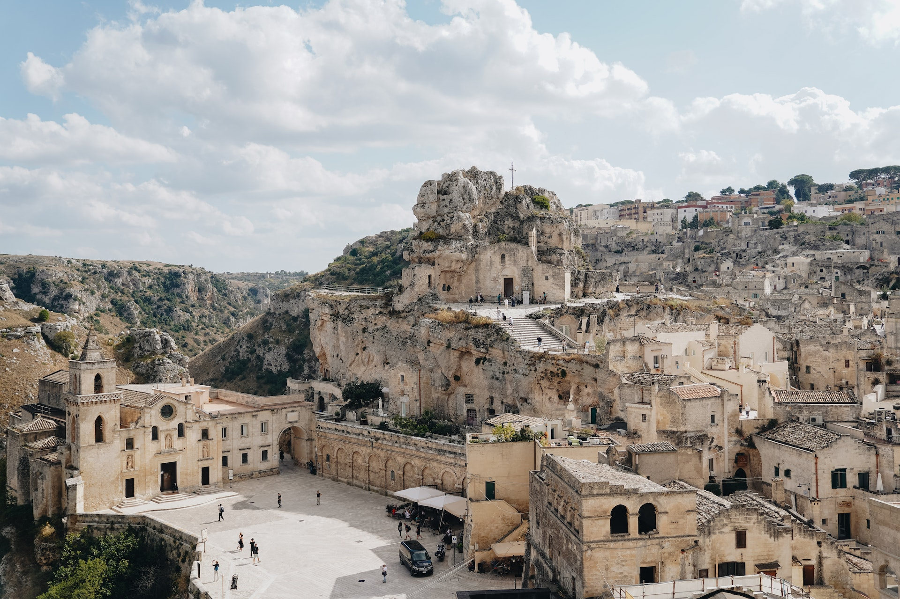

La historia de Italia es un fascinante viaje a través de milenios de cultura, política y cambios significativos. Desde sus humildes inicios como una tierra habitada por diversas tribus antiguas hasta su posición en la Europa contemporánea como una nación democrática y miembro de la Unión Europea, Italia ha dejado una huella indeleble en la historia mundial. A lo largo de esta breve línea de tiempo, se explorarán los momentos cruciales que han definido la identidad italiana, desde la legendaria fundación de Roma hasta el resurgimiento del Renacimiento, la unificación nacional, y los desafíos y triunfos del siglo XX y XXI. Esta narración histórica mostrará los altibajos de una nación rica en arte, cultura y patrimonio, proporcionando una visión panorámica de la historia italiana.
Italia antigua está poblada por diversas tribus y civilizaciones, incluyendo los romanos, etruscos y griegos.
Según la leyenda, Rómulo funda Roma en el 21 de abril.
La República Romana se establece, marcando el inicio de la antigua Roma como una entidad política.
Roma conquista Cartago en la Tercera Guerra Púnica y se convierte en una superpotencia del Mediterráneo.
Octavio (más tarde conocido como Augusto) se convierte en el primer emperador de Roma, marcando el comienzo del Imperio Romano.
El Edicto de Milán otorga libertad religiosa a los cristianos en el Imperio Romano.
El último emperador romano, Rómulo Augústulo, es depuesto por los bárbaros germánicos, marcando el colapso del Imperio Romano de Occidente.
Italia se fragmenta en varios reinos y ciudades-estado durante la Edad Media, incluyendo el Reino de los Lombardos y la ciudad de Venecia.
El Renacimiento italiano florece en ciudades como Florencia, con figuras como Leonardo da Vinci y Miguel Ángel destacando en el arte y la cultura.
Italia se unifica bajo el liderazgo de Giuseppe Garibaldi y Víctor Manuel II, estableciendo el Reino de Italia.
Benito Mussolini y el Partido Nacional Fascista llegan al poder, estableciendo un régimen fascista en Italia.
Italia se libera de la ocupación fascista y nazi durante la Segunda Guerra Mundial.
Italia se convierte en una república después de un referéndum que abolió la monarquía.
Italia es uno de los miembros fundadores de la Comunidad Económica Europea (CEE), precursora de la Unión Europea (UE).
Italia se convierte en una nación moderna y democrática, enfrentando desafíos económicos y políticos en la Unión Europea, pero manteniendo su rico patrimonio cultural y artístico.